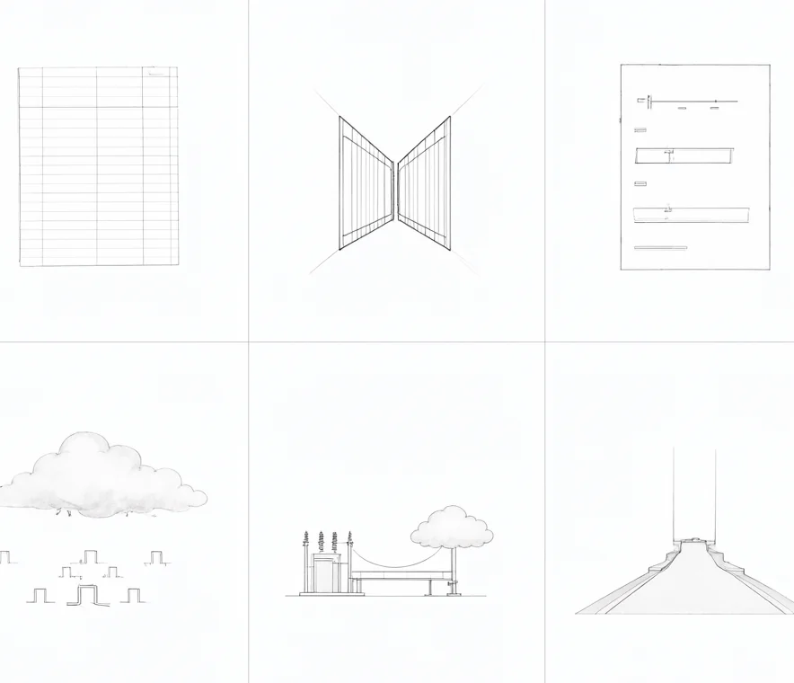

Berlin, CET
YogeshBhardwaj
I build the parts of a product that have to keep working: the interface an operator reads at a counter or in a moving van, the service underneath it, the deploy path and the error monitoring behind both. Twelve years of that, Go and Python for the services, React on top, AWS and Nginx underneath, Swift or Kotlin when the client is the product.
RoleCloud Lead, Inno2grid GmbH
SinceFeb 2021
BuildingTelemetry ingest, shared IAM and gateway control planes for distributed energy fleets across the German market — thirty engineers, one shared backbone
AvailableMon – Fri after 17:00 CET
2014first shipped product
10entries in this ledger
Go + Pythonunder the interface
Reactwhen the interface is the product
Selected work
10 entries, 2014 → now2021 → nowInno2grid platformOne backbone for a growing fleet of energy sites: telemetry ingest, shared IAM, and the control plane that decides what each gateway does next. Go end to end, the German market, thirty engineers, released against regulator-facing deadlines.GoTelemetryShared IAMControl planeAWSInno2grid GmbH, BerlinCloud Lead2020 → 21Beets&RootsA fast-casual restaurant concept started in 2016 — bowls, salads, wraps and soups made fresh. Revamped the UI and its performance, cut production deployment from four minutes to three seconds, and wired in error monitoring so a production defect names its own root cause.PythonReactAWSNginxBeets&Roots, BerlinSenior Software Engineer2018 → 19CereboA dashboard for supply operations on the Motion Track platform: live fleet tracking, workforce performance, same-day operations, re-routing and delivery-route optimisation with ETAs that react to conditions on the ground.ReactPythonAWSNginxLocus.shFrontend Engineer2018 → 19PartplayAn online learning platform for musicians: play along with a piece recorded by professional musicians and bands, and record yourself over it. Led the team and built the web dashboard and the Go server applications behind it.ReactGoPythonSwiftKotlinAWSAsilverse, for 1 Hub Media LtdLead Developer2017Complaint TrackingComplaint intake with a status history per ticket, so an owner can see who answered, when, and what the customer was told — without asking around.Status historySearchReportsIn-house toolProject Lead, full web development2016Business Case ModelerRevenue, cost and investment inputs per model generate a profit-and-loss statement for each business case, then export cleanly to Excel so financial analysts keep working in the sheet they already trust.PythonExcel exportModel comparisonMerck (freelance)Software developer2016Design AutomaterDesigners prepare product listings through a deliberately small interface, while inventory updates flow automatically to Amazon and Flipkart. A day of manual listing work dropped to about an hour.QueuesMarketplace APIsDesign toolingMatt3rTechnical Lead2015ConcaxAn advanced full-service B2B marketplace: suppliers list, buyers compare, orders close inside one flow instead of across email threads.Node.jsSearchPaymentsFairfaxSoftware developer2015–16YuriiTravellers who want local culture meet locals who design their own tours. Guides publish their own listings directly, without an intermediary desk, and the marketplace stayed ahead of its delivery date.PHPMySQLResponsive front endHarrier Tours and TravelsLead Developer2014–15Search BoxOne device reaches files, photos and video on every other device — over Wi-Fi and LAN at home, across networks over the internet — with per-user sharing permissions. Published in the Advances in Computer Science and Information Journal.GoREST APIsLAN discoveryStreamingIndependent, BangaloreProject Lead, API design
How I work
Four rules, still held- Boring infrastructure
- Choose the store everyone can hire for. Clever is a cost, not a feature.
- Delete first
- Before adding a layer, remove one. Most throughput comes from work that stops happening.
- Audit trail by default
- Every reading keeps its origin and timestamp, so an answer six months later matches the one on the day.
- Small teams, low ceremony
- Thirty engineers, direct handoffs, no queue between the person who writes the code and the person who runs it.

Fig. 1 — one ingest path, four read modelsInno2grid, Feb 2021 →